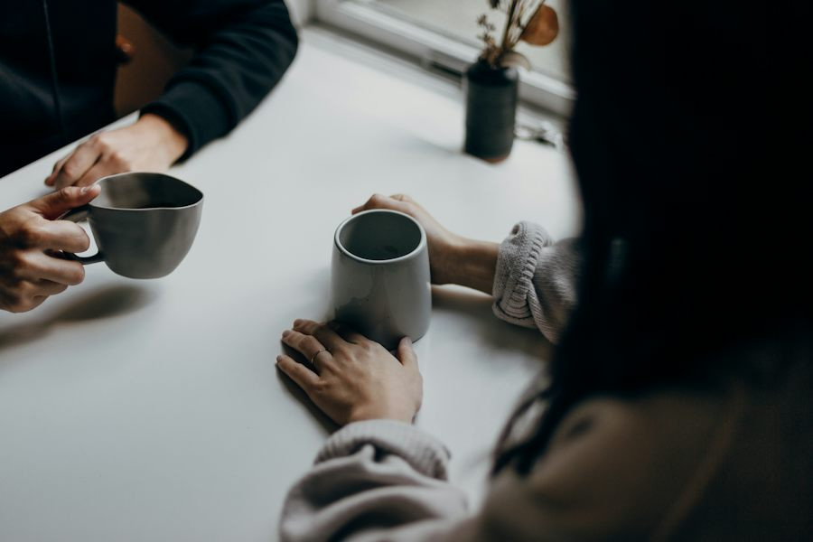

Ficha de sesión · S02 · solo docente
| § | Bloque | Min |
|---|---|---|
| 1 | Warm-up · Pick a side · Three messages: then and now | 4 |
| 2 | Vocabulary · Set Collector | 8 |
| 3 | Grammar · used to · The Liar's Past | 12 |
| 4 | Listening · Predict and Score | 9 |
| 5 | Speaking · Three families 3 · Devil's Advocate 5 · Your side 3 · Six sentences 4 · 12 preguntas 5 | 20 |
| 6 | Wrap-up · back to your side + exit | 7 |
| Total | 60 |
Warm-up · Then and now
Pick one. There is no right answer. Then say ONE reason out loud.
Teacher notes · §1 Warm-up
Pedagógica
- Dos pasos. (1) El alumno ELIGE un lado («antes eran mejores» / «hoy son mejores») y dice UNA razón: es postura, no hay respuesta correcta. IMPORTANTE: se recuerda para §5, donde el papelito le dará la postura CONTRARIA. (2) Tres mensajes de personas FICTICIAS dicen qué cambió; el alumno decide qué oración dice el hábito pasado con used to (los distractores son errores típicos: «use to», «were used to», «didn't used to») y la DICE. El hábito se clava en el tablero solo después de «I said it ✓». Sin huecos para rellenar.
- Máx. 4 min. 30 s en silencio y luego habla sin leer. No expliques todavía: modela «used to» con pausa. Seguro y Engaging: sin datos personales.
- Grupo: cada persona toma un mensaje. 1:1: pide una segunda respuesta al mensaje 2 con la forma afirmativa («Shops used to close on holidays»).
Engagement
- Minuto 1: eligen lado. Cierre en voz alta: «Today I can say what used to be different.»
- Cuando todos eligieron, avisa que en §5 defenderán el lado CONTRARIO: genera expectativa.
Crecimiento
- Anota qué lado eligió cada quien: se compara con la postura real de §5.
- Si alguien dice «we use to…», es la señal de la zona débil de hoy (se corrige en §3).
Vocabulary · The set collector
Which set does the word belong to? Then say it in a sentence.
Pieces 0 / 10 · Jokers 01. Read the word. 2. TAP the set it belongs to. 3. SAY a sentence about holidays (yours, or the model). 4. Tap “I said it ✓”: the piece goes into your set. A full set gives you a JOKER for the mission.
Teacher notes · §2 Vocabulary
Pedagógica
- Set Collector (VOC-09, COLECCIÓN): dos sets de cinco piezas sobre un mismo concepto (SELLING: about selling, discount, buy a lot, big advertising, gift list · TOGETHER: tradition, celebration, get together, special, give up). El alumno decide a qué set pertenece cada pieza (una decisión real: algunas confunden, p. ej. «special» o «give up»), dice una oración sobre las fiestas y solo entonces la pieza entra en su set. El set completo se canjea por un comodín: 30 s extra de preparación en silencio, una vez, en §5.
- Léxico: 10 ítems + 2 chunks (used to, didn't use to) = 12. Máx. dos palabras sobre B1.1 (celebration y advertising, esta última como bloque «big advertising»); nunca dentro de una tarjeta que haya que descifrar. Pronunciación: tradition /trəˈdɪʃən/, celebration /ˌselɪˈbreɪʃən/, advertising /ˈædvərtaɪzɪŋ/.
- Mic apagado: la pieza entra solo tras «I said it ✓». Setup ≤2 min (regla 3-3-3). Cierra en voz alta: «I collected N sets and I have N jokers.»
Engagement
- Rotación: VOC-09 abre por primera vez en el programa nuevo (COLECCIÓN). Los comodines son el premio que el alumno usa después: conecta vocabulario con misión.
- Pregunta: «¿Cuál palabra confundiste de set?»
Crecimiento
- Anota las piezas que fallaron al decidir: material para el repaso de S10.
- Las diez palabras reaparecen en el listening, las tarjetas de familia y la misión.
Grammar · used to
It was true before. It is not true now.
used to = a habit in the past that is different now. Not for one single event.
1 · The habit
We used to cook together.
2 · It was not like that
Shops didn't use to open on holidays.
3 · Ask about the past
Did people use to make gifts by hand?
| Form | Example |
|---|---|
| + | Christmas used to be a family day. |
| − | Shops didn't use to open on holidays. |
| ? | Did people use to make gifts by hand? — Yes, they did. |
¿Qué es? Used to + verbo dice un hábito del pasado que ya no es así: «antes se hacía / solía hacerse».
¿Cómo se usa? Afirmativo: used to + verbo. Negativo: didn't use to + verbo. Pregunta: Did + persona + use to + verbo. Con did y didn't, se escribe use, sin -d.
¿Para qué hoy? Para comparar antes y ahora: «We used to cook together; now we order food».
Cuidado: no es lo mismo que be used to («estar acostumbrado»). Hoy no se enseña. No se dice «We use to cook», ni «didn't used to».
Choose the correct sentence. Then say it.

Three facts, one lie. Ask. Check the evidence. Catch the liar.
Questions 0 · Liars caught 0 / 31. Read the evidence. 2. TAP a fact you want to ask about. 3. SAY the question: “Did you use to…?” 4. Tap “I asked it ✓”: the person answers. 5. After two questions, decide: which fact is the lie? 6. SAY why, with “didn't use to”.
Teacher notes · §3 Grammar
Pedagógica
- UN solo punto de lengua: used to / didn't use to / Did … use to…? (solo hábito pasado). Explicación docente ≤5 min (el Recap está en pantalla). Decide y dilo (3 min) + The Liar's Past (6 min): la práctica controlada ocupa ≤1/3 del bloque. Sin reactivos con hueco.
- The Liar's Past (GRM-08, IMPOSTOR; comunicativa): cada persona FICTICIA dice tres hechos del pasado con used to; uno es falso y la prueba (foto, papel de tienda, revista) lo contradice. El alumno interroga con «Did you use to…?» (cada pregunta cuenta, el testigo contesta con guion: las respuestas verdaderas traen detalle y la mentira titubea), decide cuál es la mentira y la DICE con «We didn't use to…» apoyándose en la prueba. Punto al que caza al mentiroso; no hay puntos por rapidez.
- Errores previstos: «use to», «didn't used to», «were used to». Límite de nivel: used to solo como hábito pasado; sin be used to. Cierra en voz alta: «We caught 3 liars with N questions.» Setup ≤2 min (regla 3-3-3).
Engagement
- Rotación: GRM-08 abre por primera vez en el programa nuevo (IMPOSTOR); en la sesión 1 la gramática fue OCULTAMIENTO (distinta familia). Escalación futura: en S12 el mentiroso lo juega el alumno.
- Lleva el reloj: 2 min por caso.
Crecimiento
- Los errores con used to son material del cierre.
- Anota 2 errores reales (sin nombre) durante §5.
Listening · Predict and Score

Two friends talk about Christmas in their families: before and now. Bet first. Then listen.
Final audio: MP3 recorded with ElevenLabs · Maria = Brazilian English, Emma = Canadian English. Pending recording.
Will she say it? Bet YES or NO on each one.
Bets 0 / 5Now listen. Do not look at the text.
Right bet: 1 point. Wrong bet that you explain out loud: 1 extra point.
Points 0One question about the whole conversation.
Now you: “What did your family use to do on holidays?” SAY: “My family used to…”
Teacher notes · §4 Listening
Pedagógica
- Predict and Score (LIS-05, APUESTA): a partir del escenario (dos amigas comparan la Navidad de sus familias, antes y hoy), el alumno apuesta SÍ/NO a cinco afirmaciones ANTES de escuchar y bloquea sus apuestas. Después escucha y compara con la clave: punto por predicción cumplida y punto extra por predicción fallada que explica en voz alta («I thought …, but she says …»). Es una apuesta sobre el escenario, no una pregunta de detalle de opción múltiple (ADN 8-oct); la verificación es el audio.
- Insumo, no examen: UNA sola pregunta de idea general. Guion palabra por palabra en el archivo de scripts (141 palabras), dos hablantes: Maria (inglés brasileño, no nativa) y Emma (inglés canadiense, nativa). used to ×7 y didn't use to ×1; get together, discount, buy a lot, gift list, tradition, special, big advertising, about selling. Hoja de respuestas en el archivo. [PARA GRABAR]: el HTML usa la voz del navegador hasta que exista el MP3.
- Escalación del bloque: en S1 no hubo listening; aquí aparece el acento brasileño (cuota ≥1 de cada 3). El botón «Check my bets» solo se habilita tras escuchar al menos una vez. En grupo: cada quien compara con su pareja; en 1:1: el maestro hace una apuesta contraria.
Engagement
- Rotación: LIS-05 abre por primera vez en el programa nuevo (APUESTA). El punto extra por fallar premia pensar, no adivinar bien.
- Antes de abrir la clave, pregunta: «¿Quién ganó más puntos por fallar?»
Crecimiento
- La voz de Maria (acento brasileño) está POR ELEGIR con search_voices; no se ha verificado ninguna.
- El «My family used to…» final es la antesala de §5: anota quién ya lo dice sin pausa.
Speaking · Devil's advocate

Draw a paper with a side you did NOT choose. Defend it with the families. Then say what you really think.
Idea · Reason · Example · Result. Say: used to · didn't use to · now Done when: six sentences about two celebrations: then, now, what you keep and what you give up, with a reason.
Group: pairs. Your partner listens, checks the boxes and says: “Do I buy it?”
1:1: the teacher listens, checks the boxes and asks one question from the 12.
Read the cards. Then open the twist.
Draw a paper. Think 30 seconds. Defend it for 90 seconds.
Jokers 0Silence first: 30 seconds to think. No notes of your own.
Now defend it: 90 seconds.
Switch. Now say what you really think. 60 seconds.
Take your own side. Say what the families used to do, what they do now, what you keep and what you give up. Use the timer.
Compare two celebrations. Tap each time you say one.
What did we lose, exactly?
12 questions · always 2 follow-ups

Teacher notes · §5 Speaking
Pedagógica
- Devil's Advocate Draw (SPK-03, ROL OCULTO): el papelito trae la postura CONTRARIA a la que el alumno eligió en §1 («Holidays were better before» / «Holidays are better today»): no la elige. Prepara 30 s en silencio y la defiende 90 s con used to, didn't use to y ejemplos de las tres tarjetas de familia. Cinco casillas que marca la pareja (o el maestro). Si ganó un comodín en VOC-09, puede gastarlo UNA vez para 30 s extra de preparación en silencio. Mata el «I agree» automático. Punto por defender bien la postura que NO es la propia.
- Giro (tarjeta): la familia que dice conservar la tradición (Ruiz) gastó más: 600 dólares; la «comercial» (Vega) gastó 200. ¿Qué se perdió exactamente? Esto rompe la ecuación «tradición = no comprar». Después, «Your own side»: 60 s con su postura real (la de §1 o la que cambió). Seis oraciones (evidencia del PDF): used to, didn't use to y now, y qué conserva y qué no con una razón; el alumno toca los contadores al decirlas. Marco Idea · Reason · Example · Result a la vista (S1–S5).
- 12 preguntas (todas con 2 follow-ups): elige 5 y registra 2 errores reales sin nombre. Rescate visible. Cierra con el resultado dicho en voz alta: «I defended a side I did not choose and I keep … and give up …».
Engagement
- Anuncia el resultado: «My defense had N of 5 boxes. Mission complete!»
- Pregunta final: «¿Cambió alguien de opinión al defender el otro lado?»
Crecimiento
- S3 trae present perfect frente a past simple: hoy ya contrastaron antes y ahora.
- Registra los casos reales que mencionan: buen insumo para la venta («¿qué costumbre de tu empresa ya no existe?»).
Wrap-up · Better the second time
How did your session go?
Say one real sentence about you
Said 0✓ Success
↑ Upgrade
✎ Repair
↻ Next use
Use “used to” once in a real conversation this week.
60 seconds · 5 questions
Today I can…
You can say what changed and what you keep.
Homework: tell one person what your family used to do on a holiday and what it does now, in three sentences. Next: Session 3.
Teacher notes · §6 Wrap-up
Pedagógica
- Máx. 2 aciertos y 3 correcciones de alto valor con los errores anotados en §5 (sin nombres). Resume qué familia y qué postura tocó a cada quien.
- Tarea: tres oraciones con used to / didn't use to sobre una fiesta de tu familia. Se revisa al inicio de S3.
Engagement
- Declaración final: «Today I can say what used to be different.»
- Compara con §1: «Minute 1 you chose a side. Minute 55 you defended the other side and then said what you keep.»
Crecimiento
- Registra: piezas y comodines, mentirosos cazados, apuestas y puntos del listening, casillas de la defensa, contadores de las seis oraciones.
- «Next session: Session 3, Are We Collecting Too Many Certificates?»